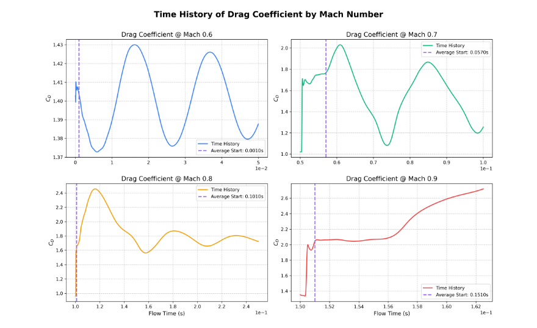
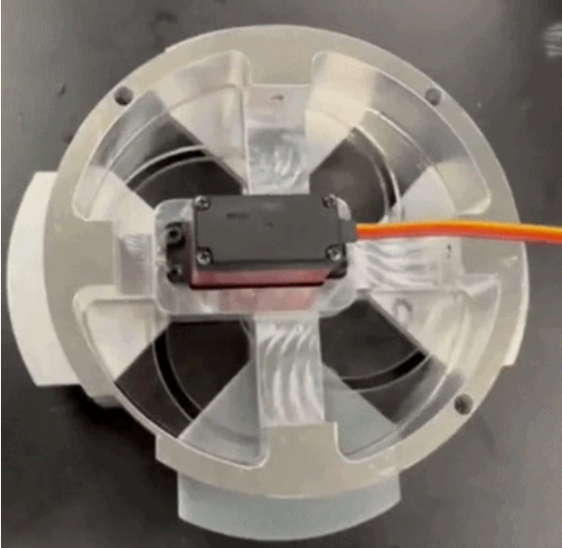
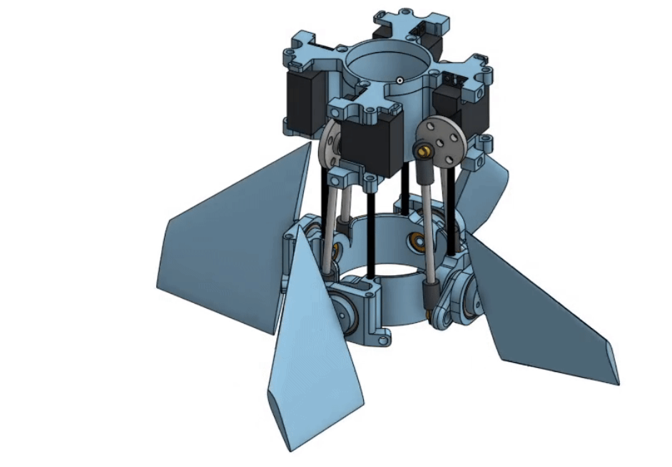
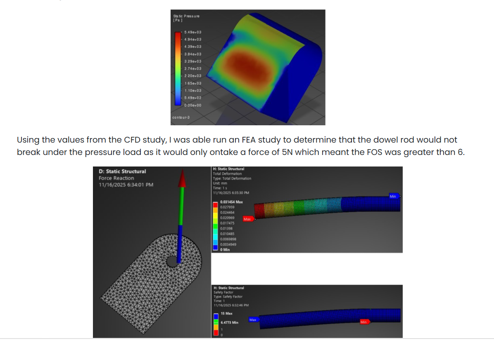
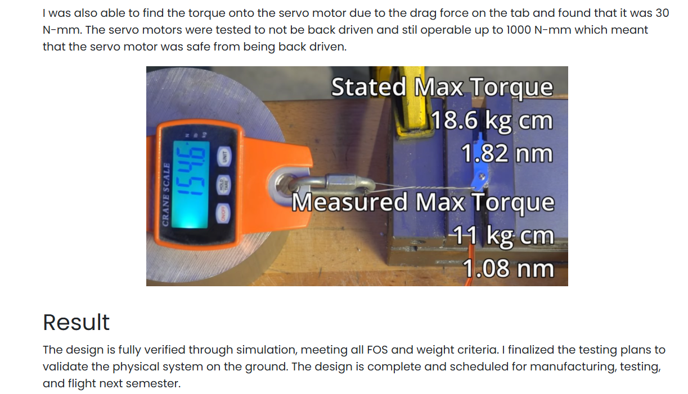
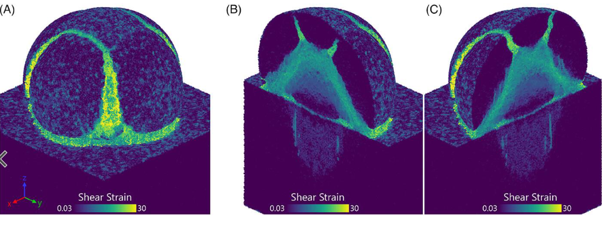
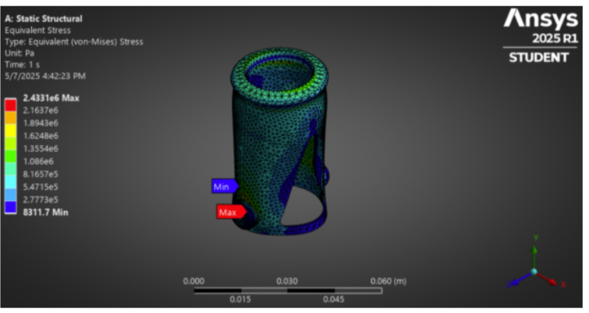
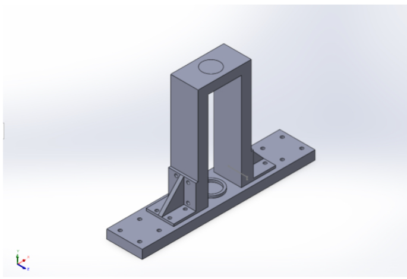
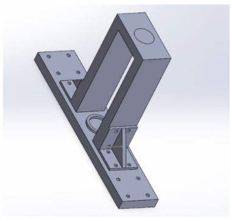

Mechanical engineering student at UT Austin building flight hardware, actuation systems, and manufacturing drawings for real vehicles — on the ground and off it.
Guinn Partners operates as part of Ascendant AI, an Austin-based drone engineering, manufacturing, and NDAA-focused product platform.
Part of Guinn Partners' design-for-manufacturing and low-rate-initial-production support engagement with DZYNE Technologies — the aircraft, production, and outcome are DZYNE's; published with DZYNE's approval via Ascendant AI.
IMPRESS — Iterative Mars Penetrator for Subsurface Science — is Guinn Partners' entry addressing NASA's "Navigation Sensors for Precision Landing" shortfall, and a 2026 winner of NASA's TechLeap Prize Space Technology Payload Challenge. The technology supports low-cost, swarm-deployable penetrator networks for Mars subsurface science and astrobiology, and is described in a peer-reviewed astrobiology paper co-authored by Guinn Partners' Head of Engineering, Mitchell Richburg.
Ascendant AI is developing the Modular FPV UAS — requirement, design, and build plan — for 526 Solutions, a U.S. Special Operations-focused training and equipment provider. Program status: in development.









"Mario is an all-around very capable young man who has quickly proven himself to be a vital asset to our team." He brought technical intuition and hands-on ability beyond his years, stepping into unfamiliar work with confidence rather than hesitation — and volunteering wherever he could to expand his engineering toolkit.